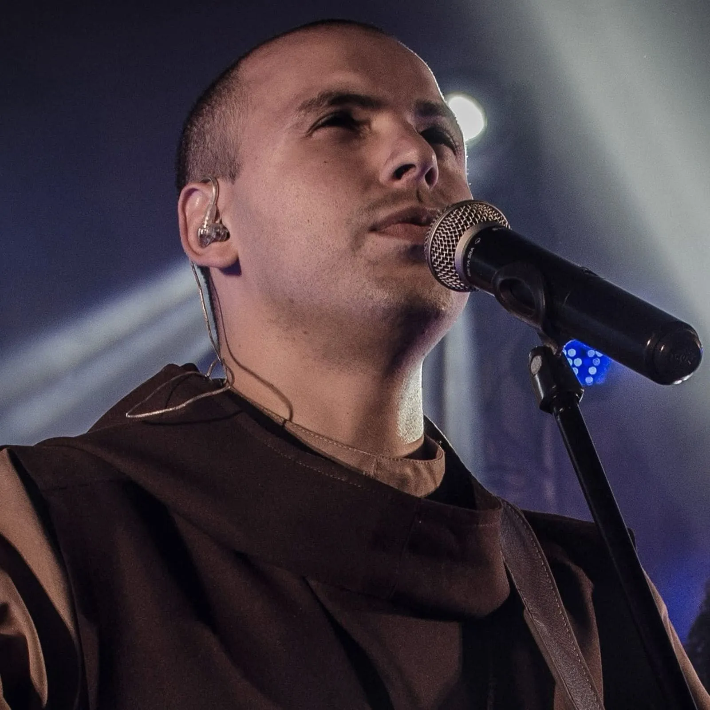

A12
PT
Você tentou tudo… MENOS ISSO!
QUERO RECEBER A QUARESMA DO PADRE PIO
Mostrando 18 de 322 comentários

Frei Gilson
A Quaresma do Padre Pio é uma das experiências espirituais mais fortes que já vivi. Quando comecei a praticar essas orações, percebi mudanças reais na minha vida e na vida das pessoas que oravam comigo. Se você está aqui, é porque seu anjo quer te mostrar esse caminho
Curtir
Responder
2.847
4 h
Maria Santos
@FreiGilson, eu comecei ontem e hoje acordei com uma paz que nunca tinha sentido. üôå‚ú®
Curtir
Responder
324
2 h
Fábio de Melo
Essa oração tocou meu coração de um jeito que não consigo explicar. Que mais pessoas tenham essa chance. É forte demais.
Curtir
Responder
3.156
3 h
Carlos Henrique
@FabioDeMelo meu pai chorou ouvindo. Tava afastado de Deus h anos. Hoje ele rezou comigo
Curtir
Responder
412
3 h
Marcelo Rossi
Eu vivi o que está nesse vídeo. A Quaresma do Padre Pio não é só um livro, é um encontro real com Deus. Quem fizer com fé, vai sentir a mudança. Assista até o final e se permita viver essa experiência!
Curtir
Responder
1.943
1 d
Gleicy
@MarceloRossi no final eu s conseguia chorar. √â muito forte üò≠ Obrigada por confirmar o que senti, padre!
Curtir
Responder
287
21 h
Reginaldo Manzotti
Essa oração reacendeu minha f. A Quaresma do Padre Pio é mais do que uma devoão, é um presente direto do Céu. Se você está aqui, é porque essa bênão também é pra você. Receba com fé!
Curtir
Responder
2.234
21 h
Ana Luiza
@ReginaldoManzotti comecei hj e j sinto meu coracao diferente
Curtir
Responder
351
21 h
João Pedro
Comecei a ora√ß√£o e uma luz invadiu meu quarto, foi lindo! üôè
Curtir
Responder
389
21 h
Patrícia Lima
Meu marido voltou a trabalhar depois de fazer a ora√ß√£o 7 dias seguidos! Deus √© fiel! üôåüèº
Curtir
Responder
443
21 h
Luciana Silva
T√¥ arrepiada! Essa oraão das 3h √© surreal üò≥
Curtir
Responder
256
21 h
Mateus Andrade
3 dia de ora√ßo e recebi uma not√≠cia maravilhosa hoje üôå
Curtir
Responder
372
21 h
Tânia Souza
Tem alguém mais acordando às 3h pra orar? Eu tô!
Curtir
Responder
298
21 h
Roberto Menezes
Ouvi dizer que o vídeo vai sair do ar logo! Assistam antes que tirem!!
Curtir
Responder
431
21 h
Rafaela Martins
Confiei e hoje estou vivendo meu milagre! üôèüò≠ Gl√≥ria a Deus!
Curtir
Responder
214
21 h
Ricardo Pereira
Senti meu anjo tocando minha cabea na oraão de ontem √†s 3h! Que loucura! üôåüèº
Curtir
Responder
465
21 h
Mostrando 18 de 322 comentários